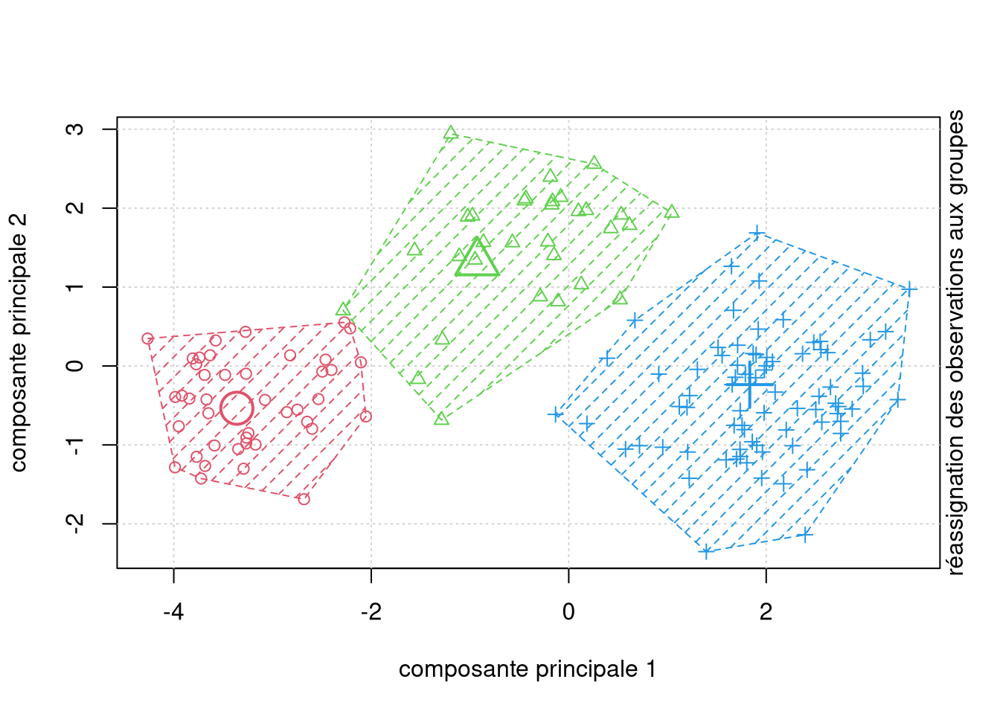

| moyenne | écart-type | min | max | histogramme |
|---|---|---|---|---|
| 2.93 | 1.14 | 1 | 5 | ▆▅▇▆▇▅▃▅ |
| 3.22 | 1.16 | 1 | 5 | ▅▃▅▇▅▇▆▆ |
| 2.96 | 1.22 | 1 | 5 | ▇▅▆▆▆▇▃▆ |
| 3.20 | 1.05 | 1 | 5 | ▃▂▅▇▅▇▅▅ |
| 3.32 | 1.18 | 1 | 5 | ▃▅▅▂▇▆▆▇ |
| 3.17 | 1.36 | 1 | 5 | ▇▃▅▃▅▅▆▇ |
4 Analyse de regroupements
Cours MATH 60602 - Analyse multidimensionnelle appliquée à HEC Montréal.
4.1 Introduction
On cherche à créer des regroupements (clusters) d’individus homogènes en utilisant \(p\) variables \(X_1, \ldots, X_p\). Plus précisément, on veut combiner des sujets en groupes (interprétables) de telle sorte que les individus d’un même groupe soient le plus semblables possible par rapport à certaines caractéristiques et que les groupes soient le plus différent possible.
Nous disposons des observations pour \(n\) individus et \(X_{ij}\) dénote la valeur de la \(j\)e variable explicative pour le \(i\)e sujet: les variables correspondant au \(i\)e sujet \(S_i\) sont donc \(X_{i1}, \ldots, X_{ip}\). Le résultat de l’analyse de regroupements sera une étiquette associée à chaque observation l’assignant à un regroupement ou l’identifiant comme aberrance.
Il y a une certaine analogie avec l’analyse factorielle. En analyse factorielle, on cherche à déterminer s’il y a des groupes de variables corrélées entre elles. On cherche donc à regrouper des variables. En analyse de regroupements, on cherche plutôt à créer des groupes de sujets similaires. Les deux méthodes servent pour l’analyse exploratoire.
Étapes d’une analyse de regroupements
- Choisir les variables pertinentes à l’analyse.
- Décider comment seront mesurées les « distances » entre les sujets.
- Décider quel algorithme ou modèle sera utilisé.
- Choisir les hyperparamètres de l’algorithme (nombre de regroupements, rayon, etc.), qui déterminent la qualité de la segmentation.
- Assigner les étiquettes aux observations et calculer un représentant-type de groupe. Interpréter les regroupements obtenus.
- Utiliser ces groupes dans d’autres analyses, le cas échéant.
4.2 Présentation des données
Les données sont inspirées d’un article traitant de la segmentation de seniors qui participent à des voyages organisés:
Hsu, C. H. C. et Lee E.-J. (2002). Segmentation of Senior Motorcoach Travelers. Journal of Travel Research, 40, 364-373.
Les buts principaux de l’étude étaient
- Regrouper les gens de 55 et plus qui participent à des voyages organisés en autobus en groupes homogènes selon des caractéristiques reliées au choix de l’opérateur et du voyage.
- Examiner les caractéristiques démographiques de ces groupes.
Un questionnaire a été élaboré afin d’évaluer l’importance de 55 caractéristiques des opérateurs de voyages organisés en autobus et des voyages eux-mêmes à l’aide d’une échelle de Likert à cinq points, allant de extrêmement important (\(\texttt{5}\)) à pas important du tout (\(\texttt{1}\)). Des données sont disponibles pour 150 sujets (il y en avait 817 dans l’article). Elles se trouvent dans la base de données cluster.
Au lieu de faire une analyse de regroupements avec les 55 items du questionnaire, les auteurs ont choisi de faire une analyse factorielle avec rotation varimax au préalable afin de réduire le nombre de variables à six facteurs interprétables :
- Activités sociales (\(X_1\)): formé de cinq items
- Politiques de l’opérateur et références (\(X_2\)) : formé de six items.
- Horaires flexibles (\(X_3\)): formé de trois items.
- Santé et sécurité (\(X_4\)) : formé de quatre items.
- Matériel publicitaire (\(X_5\)): formé de deux items.
- Réputation (\(X_6\)): formé de deux items.
On voit donc que 22 items, parmi les 55, sont utilisés dans la définition de ces six facteurs. Dans l’article, les auteurs ont décidé d’inclure ces 22 items dans l’analyse de regroupements. Pour notre part et afin de simplifier l’exemple, nous allons plutôt créer six nouvelles échelles en faisant la moyenne des items de chaque facteur ci-haut et utiliser seulement ces six échelles dans l’analyse de regroupements. Les valeurs de ces six variables pour les 150 sujets se trouvent dans le fichier cluster.sas7bdat et sont toutes dans l’intervalle [1, 5], puisqu’elles représentent la moyenne d’échelles de Likert. Le Tableau 4.1 présente les statistiques descriptives de la base de données.
4.3 Analyse exploratoire graphique
Comme c’est le cas avec n’importe quelle analyse statistique, il est utile d’explorer les données graphiquement. On peut parfois réussir à visualiser les groupes d’observations, ce qui nous permettra une fois l’analyse de regroupement complétée de vérifier la qualité de cette dernière.
On pourrait produire un nuage de points pour chaque paire de variables mais cette idée est problématique pour deux raisons:
- il y aura beaucoup de graphes si le nombre de variables est grand et
- on examine seulement les relations bivariées.

Il n’est pas nécessairement évident de détecter des groupes d’observations ainsi, alors qu’on n’a déjà que six variables.
On peut utiliser les outils du chapitre précédent et réduire le nombre de variables en considérant plutôt les composantes principales. Dans notre exemple, on va seulement s’en servir comme outil graphique pour une analyse de regroupements en réduisant la dimension afin de permettre la visualisation des regroupements obtenus. Ces dernières pourraient aussi servir de variables pour l’analyse de regroupement: une fois les étiquettes obtenues, il suffirait de calculer les statistiques descriptives sur les variables originales.
La proportion de la variance totale qui est expliquée par les deux premières composantes principales équivaut 76.7% de la variance totale originale. On ne retient que ces deux premières.
Même en ne connaissant pas l’appartenance des observations au regroupement, on distingue environ trois groupes. Le panneau droit du graphique Figure 4.3 montre les deux composantes principales, mais avec l’identification des groupes obtenus suite à l’analyse de regroupement avec la méthode des \(K\)-moyennes couverte plus tard.

4.4 Choix des variables
Les algorithmes de segmentation utilisent une matrice de données et se base sur la distance entre observations. L’analyste est libre de choisir quelles variables seront incluses dans le modèle. Le choix des variables est important: en général on veut créer des groupes d’individus qui sont homogènes par rapport à certains aspects de leur comportement ou de leur situation. On ne doit alors inclure que les variables pertinentes à cet aspect. Inclure de nombreuses variables pour lesquelles il y a un fort similitude entre individus contribue également à diluer les différences.
Par exemple, si le but de l’analyse est de segmenter nos clients selon leurs habitudes de consommation (genre de boutiques fréquenté, fréquence, etc.), on n’inclura pas des variables démographiques. En fait, souvent l’analyse de regroupements servira justement à créer des groupes qui seront comparés par rapport à d’autres variables qui n’ont pas été utilisées pour créer les groupes.
La compréhension de la base de données est cruciale pour comprendre le comportement. Par exemple, si on essaie de faire une segmentation du comportement d’utilisateurs et utilisatrices de transports en commun à partir d’informations auxiliaires comme le temps de passage, le nombre de correspondance et la fréquence d’utilisation, il peut être utile de créer de nouvelles variables (par exemple, une variable indicatrice qui indique si la personne voyage durant les heures de traffic entre 7h30 et 9h et 16h à 18h), si elle voyage cinq jours semaines, etc. L’inclusion des ces variables auxiliaires peut augmenter la qualité de la segmentation.
Pour voir si certaines variables sont inutiles, il peut être utile de comparer les représentants des groupes (par exemple, le barycentre ou une observation lambda du groupe) pour voir si les moyennes ou caractéristiques diffèrent. Si ce n’est pas le cas, on pourrait envisager de recommencer la procédure en enlevant cette variable.
Si on a un nombre important de variables explicatives à disposition, il est parfois utile de réduire la dimension (par exemple, en effectuant une analyse en composantes principales) préalablement et à ne retenir que les premières composantes pour faciliter la tâche. Cette approche n’est pas la panacée: quelquefois, cette réduction de la dimension masque les différences entre groupe et mène à une segmentation inférieure à l’utilisation des variables originales.
Malheureusement, il n’est pas évident de prime abord de déterminer quelles variables inclure dans la base de données pas plus qu’il n’est facile de juger de la qualité d’une segmentation ou du nombre de regroupements à effectuer. Les choix individuels auront un impact certains sur les regroupements obtenus: on recommande d’essayer plusieurs alternatives et de vérifier graphiquement ou à l’aide de critères d’ajustement si les regroupements obtenus sont homogènes, si la distance inter-groupe est élevée et la distance intra-groupe faible (groupements compacts).
4.4.1 Standardisation
En général, plus une variable a une grande variance, plus elle aura de l’influence sur le calcul de la distance. Ainsi, en utilisant les variables telles quelles, nous accordons plus de poids aux variables avec de grandes variances, ce qui peut être bon ou mauvais selon la structure des groupes. Règle générale, il est préférable d’éviter qu’une variable domine dans la segmentation.
On peut standardiser au préalable les variables avant de faire l’analyse. Par défaut, les variables seront standardisées afin d’avoir une moyenne de zéro et une variance de un (scale). On peut ensuite faire les analyses comme précédemment. Si on a des valeurs aberrantes, cela peut impacter le calcul des moyennes et variances; d’autres estimateurs de localisation et d’échelles plus robustes, par exemple en soustrayant la médiane de chaque colonne et en divisant par la déviation absolue par rapport à la médiane (mad). Ces deux mesures pourraient être utilisées lors de la standardisation pour diminuer l’impact des valeurs aberrantes même si le coût de calcul associé est plus conséquent.
Code
data(cluster, package = "hecmulti")
# Standardisation usuelle
# (soustraire moyenne, diviser par écart-type)
cluster_std <- scale(cluster)
# Standardisation robuste
cluster_std_rob <- apply(cluster,
MARGIN = 2,
function(x){
(x - median(x))/mad(x)})
# apply permet d'appliquer une fonction
# par ligne, colonne ou cellule
# MARGIN = 2 indique colonne
# (on centre chaque colonne tour à tour)4.5 Mesures de dissemblance et de similarité
Comment mesurer si deux observations appartiennent à un même regroupement et sont similaires? Idéalement, on aimerait avoir une situation comme dans la Figure 4.4 où les regroupements sont clairement visibles. On aimerait que la similarité entre observations intra-groupe soit élevée et que la similarité entre groupe soit faible. Les regroupements devraient être éloignés les uns des autres, tandis que les observations au sein de ces regroupements devraient être proches. Dans la plupart des cas, il y aura des observations isolées qui n’appartiennent pas nécessairement logiquement à l’un ou l’autre des groupes. On appelle parfois ces observations aberrances.

4.5.1 Mesure de dissemblance
Une mesure de dissemblance sert à quantifier la distance entre deux sujets \(S_i\) et \(S_j\) en se basant sur les \(p\) variables \(X_1, \ldots, X_p\). Plus cette mesure est petite, plus les sujets \(S_i\) et \(S_j\) sont similaires. Même s’il y a des exceptions, la plupart des mesures de dissemblances \(d\) ont les propriétés suivantes :
- \(d(S_i, S_j) \geq 0\) (positivité);
- \(d(S_i, S_i)=0\);
- \(d(S_i, S_j)=d(S_j, S_i)\) (symmétrie);
- \(d(S_i, S_j)\) augmente au fur et à mesure que les deux sujets deviennent plus différents.
Lorsque toutes les variables sont continues, la mesure de dissemblance la plus utilisée est la distance euclidienne entre sujets, soit \[\begin{align*} d(S_i, S_j; l_2) = \sqrt{(X_{i1}-X_{j1})^2 + \cdots + (X_{ip}-X_{jp})^2}. \end{align*}\] La distance euclidienne est tout simplement la longueur du segment qui relie les deux points dans l’espace.
Il existe un très grand nombre d’autres mesures de dissemblance pour variables quantitatives, ordinales, nominales et binaires. Voici une brève description de certaines d’entre elles, qui sont disponibles dans proc distance.
Mesures de dissemblance pour variables quantitatives:
On peut considérer d’autres mesures de distance. Par exemple, la distance \(l_1\), ou distance de Manhattan, est la somme des valeurs absolues entre chaque composante:1 \[\begin{align*} d(S_i, S_j; l_1) = |X_{i1}-X_{j1}| + \cdots + |X_{ip}-X_{jp}| \end{align*}\] Plus généralement, la distance de Minkowski ou distance \(l_q\) \[\begin{align*} d(S_i, S_j; l_q) = \left\{(X_{i1}-X_{j1})^q + \cdots + (X_{ip}-X_{jp})^q\right\}^{1/q} \end{align*}\]
Mesure de dissemblance pour variables catégorielles:
Le plus simple est d’utiliser la mesure d’appariement simple (simple matching). Cette mesure est simplement de la proportion des variables pour lesquelles les deux sujets ont des valeurs différentes.
On peut traiter les variables ordinales comme continues ou les traiter comme des variables nominales avec la mesure d’appariement simple; ce faisant, on n’utilise pas l’ordre entre les modalités.
4.5.2 Mesures de similarité
Il existe d’autres façons de définir la similarité entre observations. Par exemple, si on considère la dissemblance Euclidienne, on pourrait créer une matrice de similarité \(\mathbf{S}\) \(n \times n\) où les entrées indiquent si les observations sont à distance \(\varepsilon\) les unes des autres (si oui, en assignant \(1\) et autrement \(0\)) ou encore avec \(1\) pour les \(m\) plus proches voisins et \(0\) autrement. Cette approche sera utilisée lors de la présentation des regroupement spectraux.
4.6 Méthodes de regroupement
4.6.1 K-moyennes
L’algorithme de \(K\)-moyennes est un des plus populaires pour la segmentation en raison de son faible coût de calcul et de sa simplicité.

4.6.2 Algorithm DBSCAN
4.6.3 Mélanges de modèles
4.6.4 Regroupements spectraux
4.7 Mesure de la qualité des regroupements
4.7.1 Mesures d’adéquation
4.7.2 Choix des hyperparamètres
4.7.3 Méthodes hiérarchiques
Les méthodes hiérarchiques agglomératives assignent les individus aux groupes à l’aide d’un algorithme glouton en partant du cas à \(n\) groupes où chaque sujet est un groupe à part entière. La distance entre chaque paire de groupe est calculée. Les deux groupes ayant la distance la plus petite sont regroupés pour ne laisser que \(n-1\) groupes. La distance entre chaque paire de groupe est à nouveau calculée (pour les groupes). Les deux groupes ayant la distance la plus petite sont regroupés pour ne former qu’un seul groupe et ainsi de suite. Le processus se continue ainsi jusqu’à ce que tous les sujets soient regroupés en un seul groupe.
Avec une méthode hiérarchique, on n’a pas besoin de spécifier le nombre de groupes à priori. Cependant, une fois qu’un sujet est assigné à un groupe, il ne peut le quitter pour être réassigné à un autre groupe plus tard. Ce qui différencie les différentes méthodes hiérarchiques est la manière dont est calculée la distance entre deux groupes.
Pour les méthodes non hiérarchiques, le nombre de groupe est spécifié au départ et un algorithme cherche, à partir d’une solution initiale, la meilleure distribution des sujets à travers ce nombre de groupe d’une manière itérative. Avec ces méthodes, l’assignation d’un sujet peut être modifiée d’une itération à l’autre. Il faut cependant spécifier le nombre de groupe et les « centres » de ces groupes au départ. La solution peut être très sensible au choix des centres initiaux.
4.8 Méthodes hiérarchiques
Cette méthode débute avec \(n\) groupes, un par sujet, et procède en regroupant des groupes formés au préalable d’une manière hiérarchique jusqu’à ce que tous les sujets ne forment qu’un seul groupe. Le nombre de groupe retenu pourra être sélectionné à l’aide de certains critères que nous verrons plus tard.
À une étape donnée, il faut choisir quels groupes seront combinés. Les deux groupes dont la distance est la plus faible seront combinés. Il faut donc être en mesure de calculer la distance entre deux groupes. Nous allons décrire la méthode de Ward, qui compte parmi les plus populaires. Nous reviendrons brièvement sur d’autres méthodes plus loin.
4.8.1 Méthode de Ward
Cette méthode est basée sur un critère d’homogénéité global des groupes. Pour un groupe donné, cette homogénéité est mesurée par la somme des carrés des observations par rapport à la moyenne du groupe. L’homogénéité globale est alors la somme des homogénéités de tous les groupes. Plus l’homogénéité globale est petite, plus les groupes sont homogènes. À une étape donnée, les deux groupes qui causent la plus petite hausse de l’homogénéité globale (la plus petite perte d’information) sont regroupés. La méthode de Ward donne des groupes compacts d’apparence sphérique.
Plus précisément, supposons qu’à une étape du processus hiérarchique, nous avons \(M\) groupes et que nous voulons passer à \(M-1\) groupes. Pour un groupe \(K\) (parmi \(1, 2, \ldots, M\)), définissons la somme des carrés des distances par rapport à la moyenne du groupe, \(\mathsf{SCD}_k\). Plus \(\mathsf{SCD}_k\) est petite, plus le groupe est compact et homogène.
On peut calculer cette distance pour tous les \(M\) groupes et définir l’homogénéité globale comme la somme de l’homogénéité de tous les groupes, \[\begin{align*} \mathsf{SCD}_G = \mathsf{SCD}_1 + \cdots + \mathsf{SCD}_M. \end{align*}\] Plus l’homogénéité globale \(\mathsf{SCD}_G\) est petite, mieux c’est. Pour passer de \(M\) à \(M-1\) groupes, la méthode de Ward va regrouper les deux groupes qui feront que \(\mathsf{SCD}_G\) sera la plus petite possible.
On procède à une analyse simplifiée des données pour le voyage organisé avec deux variables et vingt observations afin d’être en mesure de visualiser l’algorithme de groupement.

La première analyse utilise la méthode de Ward. Les commandes SAS se trouvent dans cluster1_simplifie.sas; la présentation de la procédure et de la syntaxe est différée. L’historique de regroupement est décrit dans la sortie SAS. La première colonne donne le nombre de groupes. Au départ, les observations 16 et 19 sont regroupées, il y a maintenant 19 groupes. Ensuite, les observations 11 et 13 sont regroupées, il y a maintenant 18 groupes. Au moment de passer de 14 à 13 groupes, c’est le groupe formé à l’étape 16 qui est fusionné avec l’observation 2 et ainsi de suite. La colonne Fréq donne le nombre d’observations dans le groupe qui vient d’être formé.

Les quantités sprsq et rsq sont des statistiques qui peuvent servir de guide pour choisir le nombre de groupes. Le \(\mathsf{RSQ}\) est une mesure similaire au \(R^2\) régression linéaire qui mesure globalement à quel point les groupes sont homogènes. Elle prend une valeur entre 0 et 1 où 0 et plus le \(\mathsf{RSQ}\) est élevé, meilleur le regroupement. On définit le \(\mathsf{RSQ}\) comme la proportion de la variabilité expliquée par les groupes. C’est une version standardisée de la somme des homogénéités, \(\mathsf{SCD}_G\), \[\begin{align*}
\mathsf{RSQ} = 1-\frac{\mathsf{SCD}_G}{\mathsf{SCD}_T},
\end{align*}\] où \(\mathsf{SCD}_T\) est la somme des carrés des distances par rapport à la moyenne lorsque toutes les observations sont dans un même groupe. Le graphique Figure 4.21 montre l’évolution du \(\mathsf{RSQ}\) en fonction du nombre de groupes.

L’idée est généralement de choisir un petit nombre de groupe avec un \(\mathsf{RSQ}\) assez élevé. Ici, on voit que le \(\mathsf{RSQ}\) chute brutalement en passant de trois à deux groupes (il passe de 78.2% de variabilité expliquée à 48.6%). Ainsi, choisir trois groupes semble raisonnable.
L’autre mesure, le \(\mathsf{SPRSQ}\) ou \(R\) carré semi-partiel, mesure la perte d’homogénéité résultant du fait que l’on vient de former un nouveau groupe. Comme on veut des groupes homogènes, on veut qu’elle soit petite. Plus précisément, supposons que les groupes \(k_1\) et \(k_2\) viennent d’être regroupés à une étape donnée. Soient \(\mathsf{SCD}_{k_1}\) et \(\mathsf{SCD}_{k_2}\) les homogénéités de ces deux groupes et \(\mathsf{SCD}_{k}\) l’homogénéité du nouveau groupe formé en fusionnant les deux. On définit la perte d’homogénéité (relative) en combinant ces deux groupes \[\begin{align*} \mathsf{SPRSQ} = \frac{\mathsf{SCD}_k - \mathsf{SCD}_{k_1} - \mathsf{SCD}_{k_2}}{\mathsf{SCD}_T} \end{align*}\] On peut ainsi tracer une courbe pour le \(\mathsf{SPRSQ}\) en fonction du nombre de groupes, comme dans le graphique Figure 4.22.

La procédure SAS qui permet d’effectuer une analyse de regroupements hiérarchique est cluster. Le fichier cluster2_complet.sas explique les différentes options disponibles.
Code
proc cluster data=temp method=ward outtree=temp1 nonorm rsquare;
var x1-x6;
copy id cluster_vrai x1-x6;
ods output stat.cluster.ClusterHistory=criteres;
run;On peut représenter graphique le R carré (Figure Figure 4.23), le R carré semi partiel (Figure Figure 4.24) en fonction du nombre de groupes.


Parfois, l’information est présentée sous forme de dendogramme, qui trace l’arbre et la fusion des groupes. On peut ainsi retracer l’historique de la procédure hiérarchique. Celui produit par SAS donne, à un facteur multiplicatif près, le \(\mathsf{SPRSQ}\). Il n’y a donc pas de nouvelles informations ici. On voit que c’est lorsqu’on passe de trois à deux groupes, qu’il y a une bonne perte d’homogénéité.
En pratique, on ne peut jamais savoir si on a bel et bien regroupé ensemble les bons sujets. Mais ici, comme il s’agit de données artificielles qui ont été générées, nous connaissons la composition des vrais groupes. Il s’avère qu’il y en a effectivement trois. De plus, la solution à trois groupes obtenue avec la méthode de Ward a bien réussi à retrouver les groupes. Ceci est un exemple facile où les observations sont bien séparées: ce ne sera pas toujours aussi simple en pratique.
Interprétation des groupes: la méthode la plus simple consiste à inspecter les moyennes des variables de chaque groupe et de voir s’il en découle une interprétation raisonnable. La procédure tree permet d’extraire la solution avec un nombre spécifié de groupes et il est ensuite facile (avec la procédure means) d’obtenir ces moyennes (voir le fichier cluster2_complet.sas).


Le groupe 1 est le groupe où les sujets ont les valeurs, en moyenne, les plus faibles pour les six variables. Le groupe 2 est celui où les sujets ont les valeurs, en moyenne, les plus élevées pour les 6 variables sauf pour la variable \(X_1\) (activité sociale). Le groupe 3 est celui où les sujets ont, en moyenne, la valeur la plus élevée de la variable \(X_1\) et des valeurs moyennes inférieures au groupe 3 mais supérieures au groupe 2 pour les cinq autres variables.
Dans l’article, les auteurs ont baptisé les sujets du groupe 1, les « indépendants », ceux du groupe 2, les « dépendants » et ceux du groupe 3, les « sociables ». Notez qu’on ne peut pas tester l’égalité des moyennes des variables pour les différents groupes avec une ANOVA; la sélection des groupes est faite à l’aide d’un algorithme glouton pour maximiser la distance entre les groupes, aussi cela invalide l’inférence. On peut aussi explorer les groupes en modélisant les effets des variables en ce qui a trait à l’appartenance aux groupes. Traditionnellement, l’analyse discriminante est utilisée à cette fin. Il est aussi possible d’utiliser un arbre de classification ou une autre méthode prévisionnelle, telle la régression multinomiale logistique. La variable identifiant le groupe d’appartenance obtenu avec l’analyse de regroupement sert alors de variable dépendante \(Y\). Ce type d’analyse permet de creuser un peu plus pour essayer de comprendre la structure des groupes formés.
4.9 Calcul alternatif des distances pour le regroupement hiérarchique
Nous avons utilisé la méthode de Ward afin de calculer la distance entre les groupes et procéder au passage de \(n\) groupes à un groupe, avec l’approche hiérarchique. Supposons que nous avons choisi une mesure de dissemblance \(d(S_i, S_j)\) quelconque (distance euclidienne par exemple) pour mesurer la distance entre deux sujets. Voici comment sont choisis les regroupements avec ces méthodes.
- Méthode du plus proche voisin ou méthode de liaison simple (nearest neighbor, single linkage): utilise la distance minimale entre chaque paire de sujets (un pour chaque groupe) provenant des deux groupes. Cette méthode fonctionne bien si l’écart entre deux regroupements est suffisamment grand. À l’inverse, s’il y a des observations bruitées entre deux regroupements, la qualité des regroupements en sera affectée.
- Méthode du voisin le plus éloigné ou méthode de liaison complète (complete linkage): utilise la distance maximale entre toutes les paires de sujets (un pour chaque groupe) provenant des deux groupes. Cette méthode est moins sensible au bruit et aux faibles écarts entre regroupements, mais a tendance à casser les regroupements globulaires.
- Méthode de liaison moyenne (average linkage): utilise la moyenne des distances entre toutes les paires de sujets (un pour chaque groupe) provenant des deux groupes.
- Méthode du barycentre (centroid): utilise la distance entre les représentants moyens de chaque groupe où le représentant moyen d’un groupe est le barycentre, soit la moyenne variable par variable, des sujets formant le groupe.
Le fichier cluster3_voisin_eloigne.sas contient les commandes pour utiliser la méthode du voisin le plus éloigné (avec l’option method=complete). Le graphe plus bas donne cette distance pour les deux groupes qui viennent d’être fusionnés. Il s’agit donc du maximum des distances entre chaque paire de sujets (un pour chaque groupe) provenant des deux groupes fusionnés.

Comme on veut que cette distance soit petite pour les groupes fusionnés, on pourrait être tenté d’arrêter à trois groupes ici sur la base de la Figure Figure 4.29. L’interprétation des groupes ne change pas comparativement aux analyses précédentes. La taille des groupes, (44, 71, 35), change un peu par rapport à la solution avec la méthode de Ward qui donnait des tailles de (43, 75, 32).
On peut comparer les performances des regroupements hiérarchiques selon la méthode de groupement. La page web de scikit-learn developers montre la performance sur des exemples jouets, qui montre que selon les hypothèses et la structure, aucune ne performe mieux que les autres dans tous les exemples.

Code
library(dbscan)
# Trois plus proches voisins
eps <- quantile(dbscan::kNNdist(cluster, k = 3),
probs = 0.9)
regroup_dbscan <-
dbscan::dbscan(x = cluster,
eps = eps,
minPts = 3)
pairs(cluster, col = regroup_dbscan$cluster + 1L)Code
# Regroupements spectraux
clust <- FCPS::SpectralClustering(
Data = cluster,
ClusterNo = 3)Warning in doTryCatch(return(expr), name, parentenv, handler): ClusterRename:
DataOrDistances number of rows does not equal length of Cls. Nothing is doneCode
pairs(cluster, col = clust$Cls + 1)
Encore une fois, l’interprétation des groupes ne change pas comparativement aux analyses précédentes. La taille des groupes, (45, 75, 30) change un peu par rapport à la solution avec la méthode de Ward qui donnait des tailles de (43, 75, 32).
Règle générale, les différentes étapes des méthodes agglomératives hiérarchiques nécessitent \(\mathrm{O}(n^3)\) opérations, bien qu’une version plus parsimonieuse existe avec complexité \(\mathrm{O}(n^2\ln n)\) ou \(\mathrm{O}(n^2)\) pour les méthodes de liaison simple et complexe. La formule de Lance–Williams permet de mettre à jour récursivement les distances entre regroupements pour la plupart des méthodes considérées. Le coût élevé de la méthode de regroupement hiérarchique, qui dépend de la taille de l’échantillon, devient prohibitif avec des mégadonnées. Il nécessite aussi le calcul d’une mesure de dissemblance et l’évaluation de la qualité de l’agglomération, autre que graphique, n’est pas évidente. Ces méthodes sont largement discontinuées de nos jours par des alternatives modernes (regroupement spectraux, mélanges de modèles, \(K\)-médoïdes par itérations de Voronoï).
4.10 Méthodes non hiérarchiques
Contrairement aux méthodes hiérarchiques, il faut spécifier le nombre de groupe désiré dès le départ pour les méthodes non hiérarchiques.
Nous allons utiliser cette procédure pour raffiner la solution obtenue précédemment avec la méthode de Ward en utilisant les moyennes des groupes comme centres préliminaires. Le fichier cluster5_non-hierarchique.sas explique les différentes options. La syntaxe de la procédure SAS fastclus est la suivante:
Code
proc fastclus data=temp seed=initial distance maxclusters=3 out=temp3 maxiter=30;
var x1 x2 x3 x4 x5 x6;
run;Voici une partie de la sortie SAS:


Évidemment, comme la solution obtenue avec la méthode de Ward est déjà excellente, on ne pourra pas avoir une amélioration notable. Il y a peu de changements par rapport à la solution de la méthode de Ward. Les tailles des groupes étaient de (43, 75, 32) avant. Elles sont maintenant (45, 77, 28). Le \(R^2\) passe de 65,7% (avec Ward) à 66.2%.
L’interprétation des groupes est la même que précédemment.

Le champ des applications des \(K\)-moyennes est parfois surprenant. Par exemple, cet article de FiveThirtyEight propose une segmentation des électeurs démocrates new-yorkais. Un autre exemple incongru est la compression d’images: la Figure Figure 4.34 montre une image du bâtiment Decelles (coin supérieur gauche) et la reconstruction avec trois, quatre et 10 couleurs obtenues en appliquant l’algorithme des \(K\)-moyennes sur la matrice formée par les valeurs des canaux (rouge, vert, bleu) de l’image.
4.11 Considérations pratiques
Il peut être intéressant de comparer les résultats provenant d’une même méthode avec des nombres différents de groupes et aussi comparer ceux provenant de plusieurs méthodes (voir plus loin pour la description de certaines autres méthodes). Le choix de la méthode et du nombre de groupe n’est pas facile et devrait être basé sur des considérations pratiques et d’interprétation (comme en analyse factorielle). Il n’est pas rare qu’on obtienne des résultats très différents d’une méthode à l’autre pour un même ensemble de données.
Avec une méthode non hiérarchique, il est préférable de fournir des germes de départ « raisonnablement bon » (provenant d’une méthode hiérarchique par exemple) plutôt que de laisser l’algorithme les choisir au hasard.
Dans notre exemple sur les voyages organisés, on a segmenté les voyageurs en trois groupes (indépendants, dépendants et sociables). Les auteurs de l’article (voir page 369 de l’article) ont comparé les trois groupes selon l’expérience de voyage, la taille de la communauté où ils habitent (avec des ANOVA), selon leur âge, leur revenu et leur éducation (avec des tests d’indépendance du khi-deux). Notez que ces tests sont réalisés sur des variables qui ne sont pas utilisées lors de la segmentation: ils sont invalides si les données sont corrélées avec celle utilisées pour la segmentation. La logique est qu’on choisit les groupes pour maximiser les distances inter-groupes, donc forcément les tests d’hypothèse auront tendance à trouver des différences de moyenne quand ces différences sont trompeuses.
Le problème majeur avec l’analyse de regroupements est qu’il n’y a pas de façon claire de quantifier la performance de notre analyse. Lorsqu’on développe un modèle de prédiction (régression linéaire ou logistique par exemple), on peut estimer la performance de notre modèle d’une manière objective à l’aide de l’erreur quadratique de généralisation (régression linéaire) ou du taux de bonne classification (régression logistique). Ces quantités peuvent être estimées d’une manière objective en utilisant une méthode telle la validation croisée ou la division de l’échantillon. On ne peut faire de même avec l’analyse de regroupements car on n’a pas de variable réponse à prédire. Tout comme pour l’analyse factorielle, les connaissances à priori, le jugement, et les considérations pratiques font partie d’une analyse de regroupements.
En deux dimensions, si on considère une ville comme New York dont les rues sont quadrillées, cela revient à marcher le long des rues alors que la distance Euclidienne traverse les édifices.↩︎